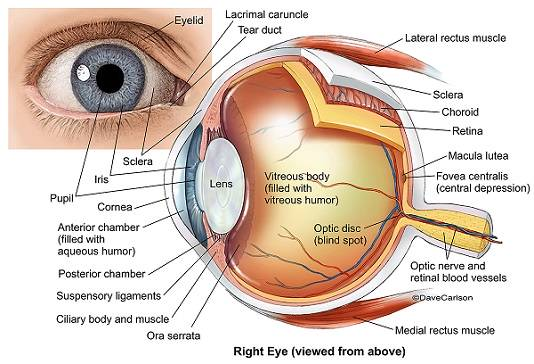
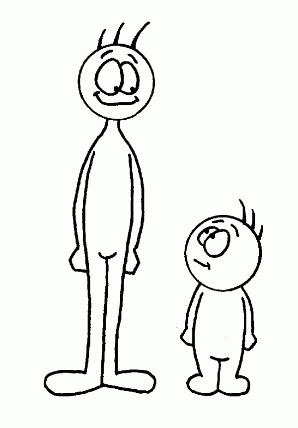

Home |
Resume |
About Me
About Yours Truly
On January 28th, 1998, I was born at a very young age. About a year later, I was diagnosed with Retinoblastoma,
a childhood eye cancer that left me blind in my left eye, though both of my eyes are still real.

I have always been tall for my height, and am consistently a very dumb smart person.
That's what there is to know about me right now.
